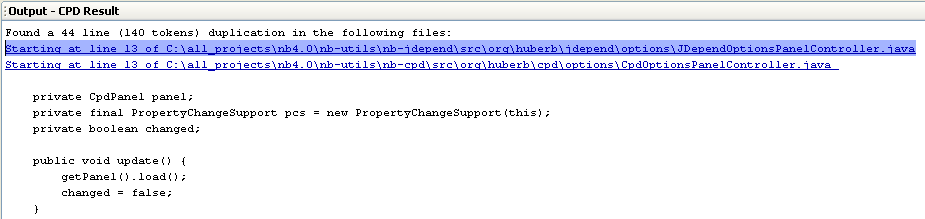
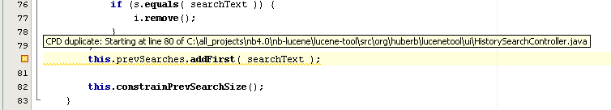
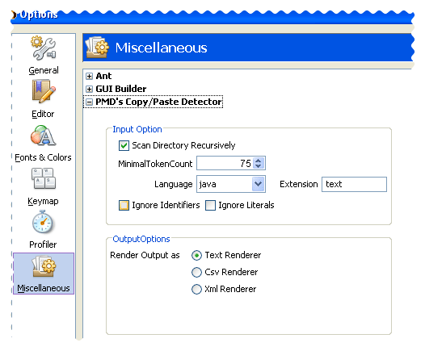

This module integrates PMD's Copy/Paste Detector (CPD) tool.
CPD can find duplicate code in your project. Read more about CPD at the PMD's homepage:
For code duplicates do the following steps:
For text, and xml output formats the lines specifying files having code duplication are hyperlinked. Clicking the line opens the file.
In output window you can navigate to the next file by Navigate|Next Error (F12), and to the previous file by Navigate|Previous Error (Shift+F12).
The CPD results are shown in the output window:
Selecting a line/file reference shows the source file, having an annotation, like:
You can set following options
You can set these options via Tools|Options|Miscellaneous|PMD's Copy/Paste Detector.
The CPD Options dialog window:
